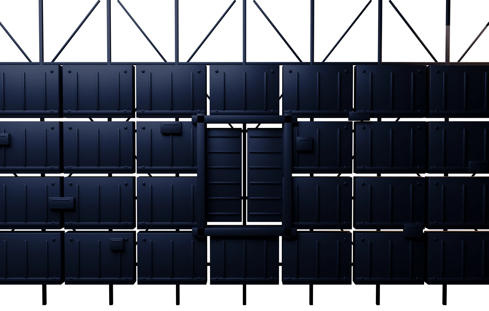

Створ закрыт. Он открывается по прямой ссылке.
01Открытая сеть
Каждый запрос идёт по чужим узлам подписанным: куда, зачем и от кого. Досмотр не ищет тебя лично - он читает всех подряд. И заодно решает, что тебе сегодня открыть, а что нет.

02Периметр
Сигнал полный, значок сети на месте, а страницы не открываются. Мобильный интернет режут по белым спискам: горстку адресов пропускают, остальное просто молчит. Где-то это длится по двенадцать часов в сутки, где-то круглосуточно.
Новые фильтры вводят почти все мобильные операторы. Проводные провайдеры - следом.
03Оболочка
Соединение уходит в оболочку целиком, вместе с адресом назначения. Снаружи видно, что канал есть, и не видно ничего больше. Протокол Hysteria 2 собран под то, чтобы канал было трудно обнаружить и трудно закрыть.
А если приложение на телефоне требует выключить VPN, в настройках включается скрытие - и требование отпадает.
04Прокол
Обходной маршрут всегда длиннее прямого. Здесь его нет: два конца канала сходятся, и между ними остаётся один переход. Трафик при этом не считают - ни гигабайтами, ни минутами.
Выбирать сервер вручную не нужно: Smart Rocket стоит в списке первым и держит связь сам - на 4G, на Wi-Fi, с глушилками и без. MTProxy при этом шифрует только Telegram: он нужен, чтобы войти и настроить остальное.
05Точка выхода
Выбери станцию - и ты выходишь в сеть с неё. Белых списков там нет, скорость упирается в твой канал, а не в чужой фильтр.
06Шлюзовая рубка
Тариф выбирается тем, помещаются ли твои устройства. Не помещаются - подписки складываются.
07Пуск
Ни один из них не занимает больше минуты. Карта не нужна ни на одном: пробные дни включаются до всякой оплаты.
08Стыковка
Rocket CDN держит ту же сеть с другой стороны: он раздаёт трафик, а не прячет его. Один флот, две задачи. Ворота ведут прямо в его космос.